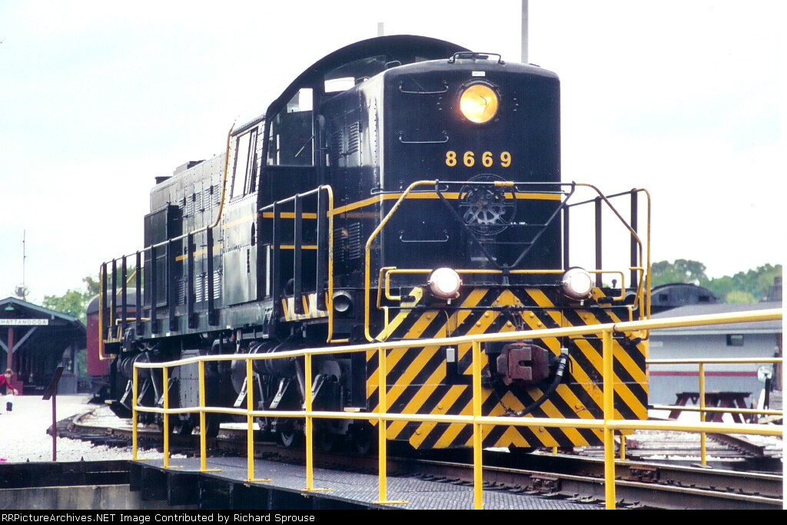
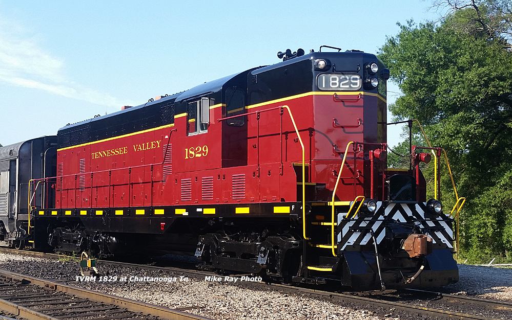

The Main Diesel Power of the Tennessee Valley Railroad
Much like their steam counterparts, the diesels of the Tennessee Valley Railroad started out small. In 1970 when TVRM acquired the East Chattanooga property the first diesels were #1 & #2, both 30 ton Plymouth twins. Twins seemed to become a staple of the museum, and throughout its history has gained many matching engines. The second batch of twins arrived in 1978 in the form of not just two, but actually four ALCo RSD-1 diesels built for the U.S. Army. Only two of those four locomotives are still owned by the museum today: #8669 & #8677. In 1993 TVRM got their second batch of another four U.S. Army engines, this time EMD GP7Ls. Once again only two of the original four survive: #1824 & #1829. The GP7s allowed for longer trains and even multiple trains running at once. Both the ALCos and GP7s were eventually restricted to TVRMs shorter 3 mile line and were replaced by newer and more reliable EMD GP38 and GP38-2 diesels in 2016.
Operating Diesel Locomotives of the Tennessee Valley Railroad
- TNVR 1 | 30 Ton Plymouth | Built Plymouth 1941
- TNVR 2 | 30 Ton Plymouth | Built Plymouth 1941
- TNVR 1146 | 25 Ton | Built GE 1952
- TNVR 8669 | RSD-1 | Built ALCo 1945
- TNVR 8677 | RSD-1 | Built ALCo 1945
- TNVR 1824 | GP7L | Built EMD 1951
- TNVR 1829 | GP7L | Built EMD 1951
- TVRM 1912 | GP9 | Built EMD 1955
- TVRM 606 | SW1200 | Built EMD 1954
- TVRM 5109 | GP38 | Built EMD 1974
- TVRM 4617 | GP10 | Built EMD 1954
Tennessee Valley 8669 / 8677 - TVRM's First Muscle
ALCo RSD-1 engines 8669 and 8677 are classic examples of early diesel-electric technology. Built in 1945, these rugged locomotives were pivotal during WWII, with some even going over seas. Acquired by the Tennessee Valley Railroad in 1978, they served as both functional engines and historical exhibits, demonstrating the evolution of locomotive technology and providing reliable service on vintage train excursions. The ALCo workhorses were crucial to TVRM's expanded operations into downtown Chattanooga and even Georgia in the 1980s and early 1990s. Locomotive 8677 was the first to retire, ending service in 2007 at TVRM's counterpart Tyner Terminal Railroad. Locomotive 8669 was retired on museum property in 2008 and sat on display until 2022 when efforts were made to bring life back to the locomotive. The engine did start, but requires an expensive new turbocharger to operate in the future.
Tennessee Valley 1824 / 1829 - The Necessary Upgrade
The GP7L units, 1824 and 1829, are classic EMD road switchers from 1951, built just one year before TVRM steam engine 610. They reflect the golden era of American dieselization. These locomotives served various freight duties for the U.S. Army in Florida before being preserved by TNVR in 1993. The powerful EMDs were a necessary upgrade at the time, as TVRM excursions were outgrowing the veteran ALCo RSD-1 diesels. The 1824 was retired due to mechanical issues in 2018, but the 1829 can still be seen operating. Today, 1829 offers guests a ride through history with smooth diesel hums and a glimpse into mid-20th-century railroading. With their characteristic low noses and durable design, the GP7Ls are a testament to the enduring appeal of classic diesel power.